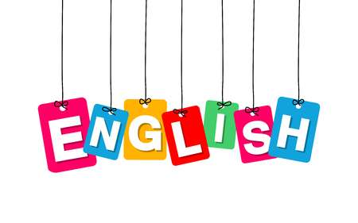

Year 9 Level Description
The English curriculum is built around the three interrelated strands of language, literature and literacy. Teaching and learning programs should balance and integrate all three strands. Together, the strands focus on developing students' knowledge, understanding and skills in listening, reading, viewing, speaking, writing and creating. Learning in English builds on concepts, skills and processes developed in earlier years, and teachers will revisit and strengthen these as needed.
In Years 9 and 10, students interact with peers, teachers, individuals, groups and community members in a range of face-to-face and online/virtual environments. They experience learning in familiar and unfamiliar contexts, including local community, vocational and global contexts.
Students engage with a variety of texts for enjoyment. They interpret, create, evaluate, discuss and perform a wide range of literary texts in which the primary purpose is aesthetic, as well as texts designed to inform and persuade. These include various types of media texts, including newspapers, film and digital texts, fiction, non-fiction, poetry, dramatic performances and multimodal texts, with themes and issues involving levels of abstraction, higher order reasoning and intertextual references. Students develop a critical understaning of the contemporary media and the differenes between media texts.
The range of literary texts for Foundation to Year 10 comprises Australian literature, including the oral narrative traditions of Aboriginal and Torres Strait Islander Peoples, as well as the contemporary literature of these two cultural groups, and classic and contemporary world literature, including texts from and about Asia.
Literary texts that support and extend students in Years 9 and 10 as independent readers are drawn from a range of genres and involve complex, challenging and unpredictable plot sequencess and hybrid structures that may serve multiple purposes. These texts explore themes of human experience and cultural significance, interpersonal relationships, and ethical and global dilemmas within rea;-world and fictional settings and represent a variety of perspectives. Informative texts represent a synthesis of technical and technical and abstract information (from credible/verifiable sources) about a wide range of specialised topics. Text structures are more complex and include chapters, headings and subheadings, tables of contents, indexes and glossaries. Language features include successive complex sentences with embedded clauses, a high proportion of unfamiliar and technical vocabulary, figurative and rhetorical language, and dense information supported by various types of graphics presented in visual form.
Students create a range fo imaginative, informative and persuasive types of texts including narratives, procedures, performances, reports, disscussions, literary analyses, transformations of texts and reviews.
